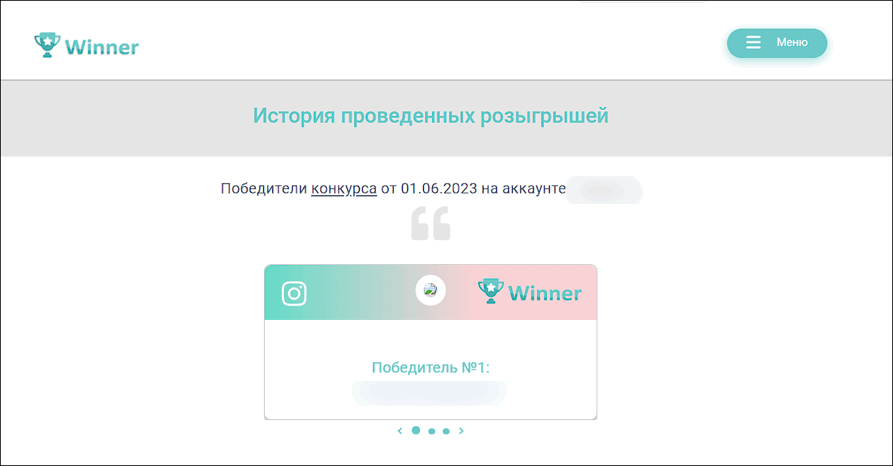
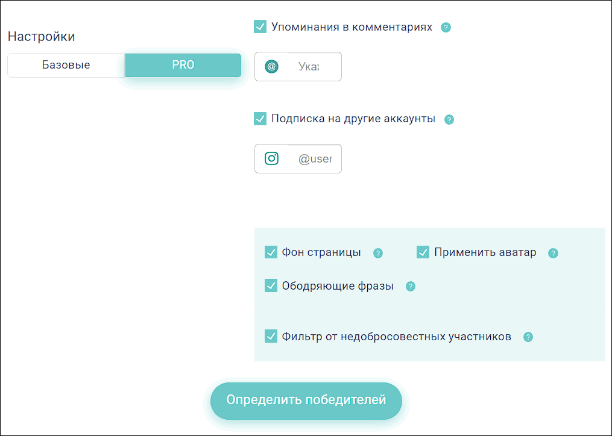
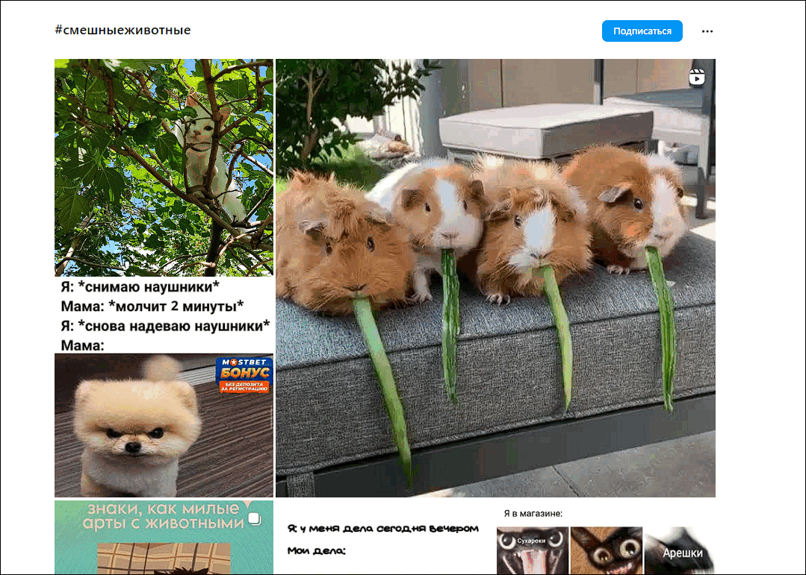
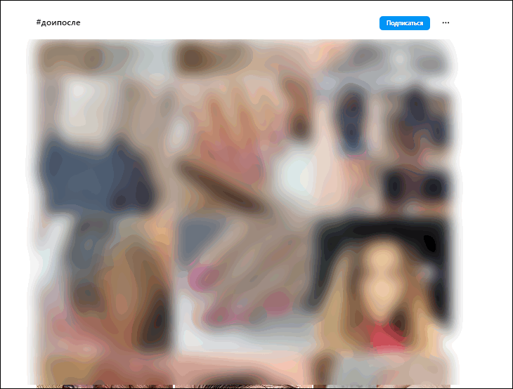

ТОП-20 тем для розыгрышей в Инстаграме

Идей для розыгрышей в Инстаграме* больше сотни, но не каждый подойдет для магазинов, блогов или экспертных аккаунтов. Поэтому подбирать конкурс нужно по статусу и использовать некоторые модели учитывая особенности своего продвижения.
Как найти тему для вашей страницы в Инстаграме*
Для каждого блога предусмотрен определенный набор розыгрышей, которые отвечают запросам подписчиков и потенциальных клиентов. Так, если вы владелец экспертной страницы с оффлайн услугами, те же «Лайк таймы» и «гивы» будут неактуальны. В этом случае подходят опросы, качественная обратная связь или репосты с указанием ссылки на ваш аккаунт. Для того, чтобы определить тему, нужно разделить все идеи на категории:
- для небольших и начинающих блогов: отметки в комментариях, упоминания в Историях, активность в откликах;
- средний: написать большой комментарий с историей, повторить что-то по мастер-классу, пройти голосование;
- крупный: подписаться на Телеграм-канал и оставить комментарий там, записать короткое видео на определенную тему, розыгрыш с отзывами.
Универсальный вариант, как увеличить охваты и одновременно устроить конкурс – попросить подписчиков оставить комментарий с упоминанием друзей или просто оставить какой-нибудь отклик. Дальше владелец страницы может определить победителя с помощью системы генерации чисел. Такой способ не требует от участников дополнительных действий, а от организатора сложных идей и схем продвижения.
Запуск конкурса: 5 шагов
Даже с оригинальной идеей розыгрыша нужно, верно, спланировать каждый этап проведения. Так, на старте вас ожидает выбор: проводить с партнерами или же самостоятельно. 5 шагов для проведения конкурса:
- Придумать идею, определить длительность проведения.
- Выбрать спонсоров, партнеров или самостоятельно организовать.
- Провести прогрев: публикации, намекающие на дальнейшее мероприятие.
- Создать конкурсный пост, где описать условия участия, добавить график.
- Завершить конкурс, выбрав удобный способ оповещения победителей.
Между 4-тым и пятым обычно период, в течение которого организатор напоминает о событии и дополнительно подогревает интерес. Минимальный срок на проведение конкурса - сутки, если приз небольшой или нужно быстро набрать аудиторию. У такого способа есть недостатки: внезапный прирост аудитории (что может стать причиной блокировки аккаунта) и низкое доверие участников. Поэтому, прежде чем запускать экспресс-конкурсы небольшого срока, нужно провести несколько стандартных (сроком до одной недели) и попробовать мини-формат: взаимный пиар, реклама чужой страницы или незначительные подарки вроде брелоков, наклеек и плакатов.
Определить победителя своего розыгрыша в GetWinner
Проводя розыгрыш для повышения популярности, владелец страницы должен выбрать способ определения победителей. В этом вопросе ему поможет сервис GetWinner, который сам просчитывает кто победил, учитывая параметры, заданные организатором.
 Чтобы воспользоваться сервисом нужно создать внутреннюю страницу и вставить ссылку на конкурсную запись. Далее появится печень условий, которые должны был выполнить участник.
Чтобы воспользоваться сервисом нужно создать внутреннюю страницу и вставить ссылку на конкурсную запись. Далее появится печень условий, которые должны был выполнить участник.

Другие преимущества сервиса:- защита от недобросовестных конкурсантов;
- оригинальное оформление и возможность создать индивидуальное поздравление;
- максимальное количество победителей – 50;
- история розыгрышей;
- возможность добавлять ссылки на чужие страницы из социальной сети;
- не нужно указывать данные от своего аккаунта Инстаграм*.
После регистрации в GetWinner вы получаете несколько первых попыток, не требующих оплаты подписки.

Интерфейс интуитивно понятен: возле каждого пункта есть подсказка, которая приведет вас к верному выбору. Например, как «Фильтр от недобросовестных участников», ограничивающий возможность одержать победу ботам и пользователям, подписывающимся только на конкурсные страницы.5 смешных идей
Чтобы конкурс был запоминающимся, а ваш аккаунт стали чаще упоминать – стоит добавить немного юмора. Даже если вы владелец собственного бизнеса или интернет-магазина.

ТОП-5 смешных идей для конкурса в Инстаграм*:- «Неожиданное фото питомца». Те снимки, которые хранятся в архиве каждого владельца домашнего животного и вызывающие смех у каждого, кто на них посмотрит.
- «Отгадай прикол». Воспользуйтесь функциями Истории и спрячьте смешную картинку таким образом, чтобы участникам было сложно отгадать.
- «Снимите видео с моим звуком». Запишите клип со своим уникальным звуком и предложите аудитории присоединиться к новому тренду.
- «Расскажите смешную историю, связанную с другом и отметьте его в комментариях».
- «Сделайте пародию на знаменитость». Снять короткое видео или сделать фотографию.
Такие розыгрыши требуют постоянного наблюдения, а чтобы отобрать победителей – придется оценивает каждого участвующего в соответствии с его талантами и правильностью выполнения условий.
5 тем для крупного блога
От масштаба блога зависят темы, которые можно использовать для продвижения и увеличения охвата.

Темы, которые подойдут:- «До и после». Подписчики должны поделиться историями о том, как ваш блог изменил их жизнь.
- Поделиться мнением. Попросите фанатов поделиться мнением относительно какого-то события.
- Голосование с несколькими страницами ответов. С помощью функции «Опросы» в разделе Историй.
- Рассказать историю успеха. Пусть подписчики расскажут о том, как они смогли купить квартиру в мегаполисе, заработали первый миллион или приобрели классный автомобиль.
- Челлендж по теме блога. Допустим, у вас страница посвященная спортивным тренировкам. Ваши подписчики должны выполнить определенный комплекс упражнений, записав это на камеру.
Менее сложный вариант, которым пользуются многие блогеры с миллионной аудиторией – упоминание друзей в комментариях. Таким образом владелец блога получает посещаемость (упомянутые получат уведомления и обязательно перейдут в профиль), потенциальных новых подписчиков, а подсчет победителей возможен с помощью сервиса GetWinner.
5 идей для увеличения охвата
Чтобы увеличить посещаемость страницы, нужны конкурсы привлекающие внимание друзей подписчиков или где в основе лежат трендовые идеи. Допустим, популярные звуки или видео-шаблон, который непросто повторить. ТОП-5 идей:
- Розыгрыш по ограниченному времени. Принять участие в нем могут пользователи только до определенному времени, в этот же день.
- Максимальное количество близких друзей в комментариях. Нужно отдельным откликом отметить всех близких.
- Пролайкать несколько постов и сделать репосты.
- Сделать фото с продукцией и добавить отметку конкурсной страницы.
- Придумать слоган и написать его в комментариях.
Варианты с повышением охвата направлены на проявление активности в конкурсном аккаунте. Участники должны совершать максимальное числа действий в блоге, тем самым повышая его охваты и вероятность вывода в ТОП.
Идеи если начинающий блог
Владелец недавно появившегося блога должен взаимодействовать с аудиторией таким образом, чтобы заслужить их доверие и стать узнаваемым в своей нише. Поэтому открывая свой блог нужно правильно сформулировать УТП (уникальное торговое предложение) и исходя из него уже планировать розыгрыш/конкурс. Какие варианты подойдут:
- Взять небольшое интервью у друзей или знакомых по теме блога.
- Пост ностальгии. Опубликовать одно из своих старых фото (ваши неудачные снимки, фотографии с юности/детства и прочее).
- Рассказать о своем хобби, отметив конкурсный аккаунт.
- Поделиться смешной историей в Сторис, отметив страницу с розыгрышем.
- Трансляция с комментариями. По откликам сформировать список участников.
Вариант с проведением трансляции требует нескольких человек для наблюдения за чатом. Вам пригодится второй модератор, который будет фиксировать никнеймы участников и ссылки на их аккаунты, а также блокировать ботов и отсеивать фейков.
Анализ проведенного конкурса в Инстаграме*
Даже шутливые и прикольные розыгрыши обладают обратной стороной: после мероприятия от страницы отпишутся новые поклонники. И хорошим результатом считается, если от подписки отказалось 60% новой аудитории. Это актуально, как для маленького, так и крупного блога. Проанализировать успешность можно по таким критериям:
- активность пользователей во время мероприятия;
- процент новой аудитории;
- принимали ли участие постоянные подписчики;
- был ли увеличен охват;
- кто именно принимал участие: какой процент ботов.
Чтобы ответ был точным, наблюдать за статистикой нужно до начала события, во время и после. Сложив данные, вы получите итоговую оценку и сможете определить допущенные ошибки.